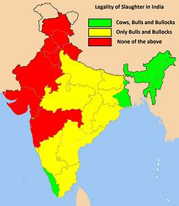
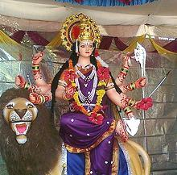

Spanning a vast region from Kashmir to Bali, thousands of years, diverse
peoples and languages as different as Hindi (Indo-European) and Tamil
(Dravidian), Hindu dietary customs could hardly be expected to be uniform,
and they aren't. Here we've got your hard core vegetarians, and we've got
your spit roasted pig - and even beef in some regions and cities.
Photo of Shiva © i0154
"Hinduism" is a British invention, to conveniently lump together a whole lot of somewhat different but related religions, philosophies and cultures of the Indian Subcontinent. This term, while imprecise, is much in common use outside India, without regard to the details, and has come to represent a diverse religio-cultural expanse, even in India.
Considering Hindu as a religious complex, it is the third most populous religion in the world, dominating India, Nepal and Bali with significant populations in other South and Southeast Asian countries. Beyond its traditional range, the Hindu population of the Americas is nearly 2.5 million with 1.4 million in the U.S. while Guyana, Suriname and Trinidad and Tobago in South America are together about one third Hindu.
Other religions native to the region are Sikhism and Jainism but they are both significantly different. Buddhism is an offspring of Jainism and various Hindu cults. Whether the Hare Krishna cult should be added to the Hindu count is debatable as they themselves say not, but waffle a bit on that point. They do, however, use the Hindu texts and adhere to the Brahman Diet.
Hinduism very much dominates the entirety of India, except the far northeastern corner where Christianity dominates. Islam has a significant minority presence in many Indian states. In Kerala, in the far southwest, Islam and Christianity both have a significant share, while Hinduism still holds a small majority.
Though it's thought not actually a part of Hinduism, a major feature of Indian society is the caste system (Link-1). Exactly how this complex and very rigid structure developed is a subject of conjecture. The sacred Vedas do divide people into four Varnas (castes) but not with the complexity or hereditary rigidly of the current system. In any case, a person's caste and region affect how s/he is expected to adhere to the various dietary customs.
Clearly those of higher caste should adhere to the Sattvic for their spiritual development, while the middle castes indulge in the rajasic and the lower castes in the tamasic - they're thought spiritually beyond hope anyway.
 Whether or not the sacred Vedas prohibit slaughtering cows depends on who is translating and what verses are selected as "proof", but they were probably eaten in those times, at least to some extent. Veneration of cows probably stems from the rise of the Krishna cult, from economics, and from Brahmanism's response to Buddhism. Milk and milk products, like butter and yogurt, are more efficient use of the animals.
Battles over banning slaughter of cows are very complex and extremely political. The bans are often seen as moves by the upper casts to maintain control, and as part of anti-Muslim pogroms. The bans have resulted in widespread smuggling of cattle from states that ban slaughter to those that don't. Eating beef is not banned in any state.
Consumption of milk and milk products brings up the always
embarrassing problem of what to do with male calves, which will never
be good milk producers (and aren't "The Mother" either). In the northwest
states, there is a total ban on cattle slaughter, but in most of India,
slaughter of male cattle is legal, and often cows over a certain age.
Some activists say that since all cattle shit, and cowpies are dried
and used for household fuel, none qualify as non-productive.
Map by Barthateslisa (2015) distributed under license
Creative Commons
Attribution-ShareAlike v3.0 Unported.
This section is by no means comprehensive of what is eaten by Hindus
in India - that varies from state to state and from one side of a state
to another. Only about 30% of Hindus are vegetarians, so the rest eat
whatever animals, birds, fish and shellfish are available and allowed
by the religious doctrine they follow. The diets listed here are
are of particular current or historical interest.
There are, of course, exceptions. In Kashmir Brahmans eat meat (though not beef) and to a lesser extent in Orissa, Bengal and Maharashtra where eggs, fish, chicken and even lamb and goat may be included.
The Hare Krishna cult (International Society of Krishna Consciousness)
adheres quite strictly to the Brahman Diet, but adapts some Western foods
to it. They have always been rather food oriented and run a worldwide
chain of dining halls called "Govindas" where inexpensive sattvic food
is served (non-believers are welcome). The food is good enough to have
been listed by Saveur magazine in their annual top 100 favorite things
(Jan/Feb 2008). Back in the mid 1970s I ate a few meals at the main
Los Angeles temple and the food was good then too. I met A.C.
Bhaktivedanta Swami Prabhupada in person back then, but in 1977 ISKCON
fell on confusing times due to lack of succession planning.
Photo distributed under license
Creative Commons
Attribution-ShareAlike v3.0 Unported..
From 1206 to 1857 Muslim invaders ruled various parts of India and nearly all of India at the height of the Mughal (Mongol) Empire around 1800. They established a culinary tradition based on Persian cuisine melded with Indian ingredients. This tradition continues in the current era even though the population is now nearly all Hindu. It predominates in the Northwest and is also found in the city of Hyderabad in east central India.
This Mughal cuisine is the one most familiar to Americans as
"Indian cuisine". It's spicing is rich and aromatic with dishes including
lamb, chicken, yogurt and cheese but beef and pork are not eaten. Leavened
naan bread is commonly served as are complex rice pilafs. Most predominant
in Kashmir, Rajasthan, Punjab, Delhi and Hyderabad.
Meat, chicken, fish and other animal flesh is little used in Gujarat, but milk products are very popular, with Gujarat the largest milk producer in India. Followers of Swaminarayan do not eat eggs but other Gurjarati do. "Roti" flat bread, usually made of millet, is much served but so is rice and a very wide variety of seasonal vegetables and pulses. Dishes tend to be a bit sweeter than in other parts of India.
Gurjarat is an educated and highly industrialized area so it both has
considerable influence on the rest of India and attracts outsiders who
seek employment there. Many Gurjarati have taken up residence in the U.S.
and other Western countries filling technical positions.
Also in Karnataka, a bit south from Udupi, live the Kodava people,
who are barely Indian by culture, and not Hindu by religion. They erect
no images of gods and do not recognize the caste system at all. The
history of this warrior people is unknown, whether they came from
somewhere else, or have always been there. In Kodava, pork is the
favorite meat, with lamb, chicken and fish also appearing on the
dinner table.
While the Mughali cuisine of northern India has been most familiar to Americans as "Indian cuisine", restaurants specializing in the famous vegetarian cuisines of Southeastern India are now becoming common, especially in Southern California, but also in New York.
Dal (split and peeled pigeon peas, mung beans and lentils) is the foundation of the cuisine, but rice is also much used, Coconut and coconut milk are major ingredient and frying is done largely in coconut oil. Dairy products are expensive but yogurt is popular. Rather than bread thin lacy pancakes made from a mix of rice and dal are widely served.
Potatoes and many other vegetables are used, usually in combination with dal. The green and white balls known here as Thai Eggplants, are also the most common eggplants in southeast India. Curry leaves, tamarind, and lots of chilis are major spicings, while the aromatic spices of the Mughali cuisine are little used. Pickles and chutneys appear at every meal.
While southeastern India is famous for its vegetarian cuisine, it
isn't by any means a totally vegetarian region. In Andhra Pradesh
(91% Hindu), mutton, chicken and seafoods of all kinds are enjoyed by
the majority of the population. In Tamil Nadu (88% Hindu), especially
around the city of Channai (formerly Madras), pork, mutton, chicken
and seafoods of all kinds are enjoyed by the majority. Muslims (6%)
skip the pork, but the Christians (6%) will eat anything.
Seafood and fresh water fish are very popular, and chicken has a
major place on the table, but the most notable feature of Kerala
cuisine is Beef. Beef is much enjoyed by Hindus (55%), Muslims (27%),
and Christians (18%) alike. This is a major region for raising, eating,
and exporting beef.
 The major Navaratri festival is held in the September - October period, and is a 10 day and 9 night festival celebrating victory of good over evil. The legends and central character featured vary from one region to another. Shown here is Durga, very popular in Maharashtra. Lesser Navaratri occur at the other three changes of season.
Many people fast for all or some specific days during the main festival. During the fast, certain foods are allowed, and certain are not allowed. This varies somewhat with region and family, so the list here is approximate, but a fairly good guide. This list is primarily from Uttar Pradesh state in northern India, rules may be stricter in Udupi.
?? = opinions vary, consult your religious leaders.
hindu.html 080111 r 200524 r 21015
©Andrew Grygus
- ajg@clovegarden.com - Linking and non-commercial use permitted